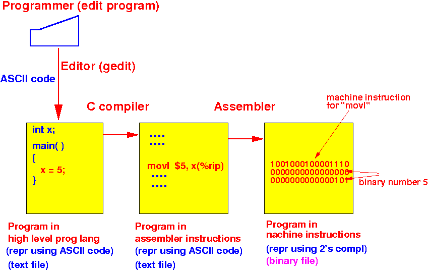

- Compiler:
- Compiler = a program (application) that translates a computer program written in a high level programming language into machine code (= binary numbers)
- Commonly used
high level programming languages:
- Java (CS170)
- C/C++
- Translating a
program written in
a high level programming langaue into
machine code:
- Step 1:
translate the program written in
a high level programming langaue into
an equivalent program written
in assembler programming language
- Step 2: use an assembler to translate the assembler language program into machine code
Schematically:

- Step 1:
translate the program written in
a high level programming langaue into
an equivalent program written
in assembler programming language
- Here is the details on
what happens
during this process:
- The programmer (= you)
use an editor and
write the program in
a high level programming language
(e.g.: C or
Java)
- The programmer types the
program using a key board
- The key board sends
ASCII codes to the
editor
- The editor (program) stores the program encoded using ASCII code in a program source file (e.g.: main.c or main.java)
Example:
- Programmer use
editor to
create a C program source file:
(main.c)
int x; int main( ) { x = 5; }Stored as: (od -b main.c)
(Octal numbers) 0000000 151 156 164 040 170 073 012 012 151 156 164 040 155 141 151 156 0000020 050 040 051 012 173 012 040 040 040 170 040 075 040 065 073 012 0000040 175 012 You can see that the file uses ASCII code: 151(8) = 01101001(2) is the ASCII code for the letter i 065(8) = 00110101(2) is the ASCII code for the symbol 5
- The programmer types the
program using a key board
- The C program source file
(encoded in ASCII code is
first translated by
the C compiler to
an equivalent program in
assembler instruction
- In this course we will
study how to
translate a
C statements into
assembler instructions
- The assembler program is also encoded using the ASCII code (so it's still a text file)
Example:
- Run: gcc -S main.c
- The C compiler will
output the
assembler program main.s:
.file "main.c" .comm x,4,4 .text .globl main .type main, @function main: .LFB0: .cfi_startproc pushq %rbp .cfi_def_cfa_offset 16 .cfi_offset 6, -16 movq %rsp, %rbp .cfi_def_cfa_register 6 movl $5, x(%rip) leave .cfi_def_cfa 7, 8 ret .cfi_endproc .LFE0: .size main, .-main .ident "GCC: (GNU) 4.4.7 20120313 (Red Hat 4.4.7-11)" .section .note.GNU-stack,"",@progbits - Here is the proof that
the assembler program is
encoded using ASCII code:
(od -b main.s)
0000000 011 056 146 151 154 145 011 042 155 141 151 156 056 143 042 012 0000020 011 056 143 157 155 155 011 170 054 064 054 064 012 011 056 164 0000040 145 170 164 012 056 147 154 157 142 154 040 155 141 151 156 012 .... (many lines deleted) 0000260 146 151 137 144 145 146 137 143 146 141 137 162 145 147 151 163 0000300 164 145 162 040 066 012 011 155 157 166 154 011 044 065 054 040 0000320 170 050 045 162 151 160 051 012 011 154 145 141 166 145 012 011 .... (many lines deleted) 0000540 011 056 156 157 164 145 056 107 116 125 055 163 164 141 143 153 0000560 054 042 042 054 100 160 162 157 147 142 151 164 163 012 146(8) = 01100110(2) is the ASCII code for the symbol f 065(8) = 00110101(2) is the ASCII code for the symbol 5
- In this course we will
study how to
translate a
C statements into
assembler instructions
- The Assembler program
(encoded in ASCII code) is then
translated by
the Assembler into
machine instruction
- Machine instructions are
binary codes used to
tell the
computer what to do
- Operations are
encoded using
machine instruction code
(which is machine specific)
--- see:
click here
Example:
000000 = add byte operands (0000 means: add) 000001 = add short operands 000010 = add int operands 000100 = subtract byte operands (0001 means: subtract) 000101 = subtract short operands 000110 = subtract int operands And so on...
- Signed numeric values used in
machine instructions are
encoded using 2's complement code
Example:
signed value -2 is encoded as: 11111111 11111110 (2's complement) (The number of bits used to encode a signed value can be: 8, 16, 32, 64)
Example:
- Compile using
this command:
gcc -c main.sThe assembler will output the file main.o containing binary unprintable (non-ASCII) codes:
cat main.o (and see the jibberish)
- The machine instruction code for
movl $5, x(%rip)
is:
objdump --disassemble main.o ... 4: c7 05 00 00 00 00 05 movl $0x5,0x0(%rip) ... So the machine code for movl $5,x(%rip) in bits is: 011000111 00000101 00000000 00000000 00000000 00000101 ^^^^^^^^^^^^^^^^^^ ^^^^^^^^^^^^^^^^^^^^^^^^^^^^^^^^^^^ encodes "movl" encodes 5 in 2's complementYou can find the proof of that the machine instructions are stored in binary format using this command:
od -b main.oLook for the line:
0000100 125 110 211 345 307 005 000 000 000 000 005 000 000 000 311 303
The highlighted section is the above machine instruction (written in Octal)
Notice that:
- The number 5 is now
encoded as a
2's complement code !!!
So the assembler translates number symbols (e.g. '12') coded in ASCII into 2's complement !!!
- The number 5 is now
encoded as a
2's complement code !!!
- Machine instructions are
binary codes used to
tell the
computer what to do
- The programmer (= you)
use an editor and
write the program in
a high level programming language
(e.g.: C or
Java)

- The program files used to illstrate the examples are found in:
- /home/cs255000/demo/c-asm/main.c
- To obtain the assembler program: gcc -S main.c
- To obtain the machine code program:
gcc -c main.s
Then use: objdump --disassemble main.o to see the binary machine codes with the assembler instructions
|
|